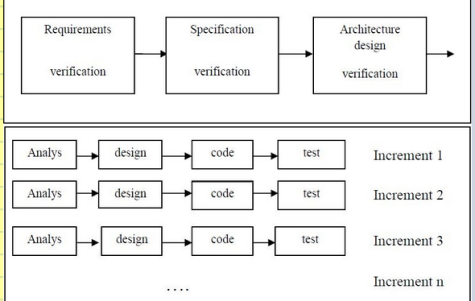

Home
About Us
Metodologi
Our Team
Contact
Incremental Metodologi

Incremental model adalah model pengembangan sistem pada software engineering berdasarkan requirement software yang dipecah menjadi beberapa fungsi atau bagian sehingga model pengembangannya secara bertahap. Dilain pihak ada mengartikan model incremental sebagai perbaikan dari model waterfall dan sebagai standar pendekatan topdown.
Kelebihan
a. Merupakan model dengan manajemen yang sederhana.
b. Pengguna tidak perlu menunggu sampai seluruh sistem dikirim untuk mengambil keuntungan dari sistem tersebut. Increment yang pertama sudah memenuhi persyaratan mereka yang paling kritis, sehingga perangkat lunak dapat segera digunakan.
c. Resiko untuk kegagalan proyek secara keseluruhan lebih rendah. Walaupun masalah masih dapat ditemukan pada beberapa increment. Karena layanan dengan prioritas tertinggi diserahkan pertama dan increment berikutnya diintegrasikan dengannya, sangatlah penting bahwa layanan sistem yang paling penting mengalami pengujian yang ketat. Ini berarti bahwa pengguna akan memiliki kemungkinan kecil untuk memenuhi kegagalan perangkat lunak pada increment sistem yang paling bawah.
d. Nilai penggunaan dapat ditentukan pada setiap increment sehingga fungsionalitas sistem disediakan lebih awal.
e. Memiliki risiko lebih rendah terhadap keseluruhan pengembagan sistem.
f. Prioritas tertinggi pada pelayanan sistem adalah yang paling diuji.
Kekurangan
a. kemungkinan tiap bagian tidak dapat diintegrasikan.
b. Dapat menjadi build and Fix Model, karena kemampuannya untuk selalu mendapat perubahan selama proses rekayasa berlangsung.
c. Harus Open Architecture.
Kembali ke Check box
Sumber Gambar :
- student.unsika.ac.id/metodologi_penelitian_redisuhendri113/incremental